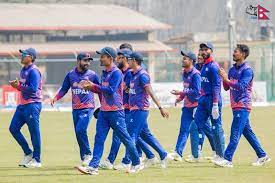
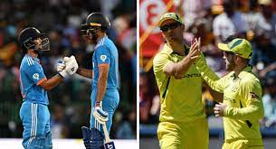
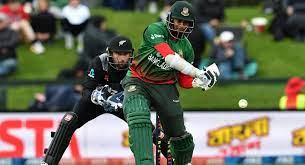

Mohammed Siraj recorded figures of 6/21 as he led India's demolition job in the 2023 Asia Cup final.
Siraj took four wickets in just his second over and
Sri Lanka were all out for 50 and India ended up chasing the target down in just 6.1 overs(AFP)
Nepal national cricket team made a mockery of Mongolia in the first match of the men's competition at the Asian Games 2023 on Wednesday, September 27. Put into bat first in the Group A match at Zhejiang University of Technology Cricket Field, Hangzhou, China, the Rhinos, the nickname of the team, ran berserk against a side entirely made up of T20I debutants. They rode record-breaking knocks from Kushal Malla (137 not out off 50 balls) and Dipendra Singh Airee (52 off 10 not out) to post a massive total of 314/3 in 20 overs for the first-ever 300-plus score in T20I history. They then dismissed Mongolia for 41 runs in just 13.1 overs thus registering a 273-run win -- which is also another world record. Only one Mongolian batter reached a double-digit score, 10 in 23 by Davaasuren Jamyansuren. The innings witnessed five ducks. The three-team group also has the Maldives. Nepal next face the Maldives on October 1. Catch key highlights and cricket scores of the NEP vs MGL match here.
Team India will begin a three-match ODI series against Australia with the first game set to take place at the Punjab Cricket Association (PCA) Stadium in Mohali on Friday. The newly-crowned Asia Cup 2023 champions will look to iron out the chinks in their armour ahead of the ICC Men’s Cricket World Cup 2023 which begins in India next month. KL Rahul, who made an impressive return from injury, will be leading the Indian side in the first two games with Rohit Sharma and Virat Kohli rested for these games. Australian skipper and pacer bowler Pat Cummins is also coming back from injury but Mitchell Starc is still yet to recover from injury and will be unavailable for the first game.
Follow live coverage of Bangladesh vs New Zealand from the New Zealand in Bangladesh 2023 today. The ICC Test Championship sees nine teams compete across a two-year cycle of matches before a two-team final decides the winner. The inaugural competition was won by New Zealand after a thrilling victory over India in June 2021. The 50-over World Cup is far older and has been competed for since back in 1975. Australia are the record winners having run out victorious on five occasions (1987, 1999, 2003, 2007 and 2015). England took the 2019 crown after a dramatic Ben Stokes-inspired super-over win over New Zealand at Lord's.
